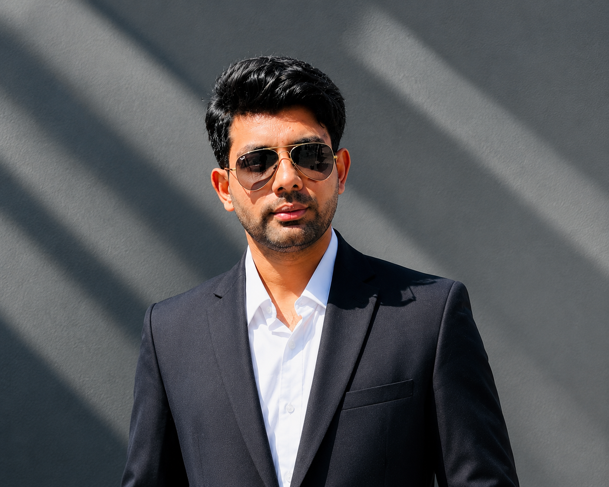

MSc, Applied Computer Science (AI)
Høgskolen i Østfold, Norway
Dissertation: automatic data acquisition for power line inspection using autonomous UAVs in a simulated environment, built with deep-learning models and Unreal Engine.
UX & system designer · Oslo, Norway
I design the systems behind maritime HR and crew training — from the workflow logic down to the screens people use at sea.

In short
I'm a UX and system designer with four years on a B2B platform used to run HR and training for maritime crews. I own the design end to end: sitting with customers to understand how a process actually works, mapping the logic, prototyping in Figma and Balsamiq, and staying with it through development in an agile team until it ships.
Before design I worked in machine learning and computer vision — autonomous UAV inspection of power lines, conceptual modelling, code-smell detection — which is why I'm comfortable specifying systems, not just screens.
Selected work
Both are integration problems: two systems that had to agree with each other without anyone re-typing data in between. The summary is up front; the technical detail is one click down.
Employee records lived in two systems at once, so every change had to be re-entered by hand — and the drift was usually discovered downstream, by payroll.
Designed a two-stage replication flow: validate into staging tables before anything is written, then a controlled write-back to the external system. Mapped every branch — create a new person versus update an existing employee, documents, activity records — so developers had one unambiguous spec instead of a conversation.


The flow runs in two stages, in both directions, so that nothing is written to a live record until it has been validated in isolation.
Crew training had to work both in an office and on a vessel with intermittent connectivity, across a web portal and a desktop application — and every extra login was a barrier for people at sea.
Designed an e-learning solution that joins Moodle to the existing platform: single sign-on so no one manages a second password, and a replicator that handles enrolment differently office-side and vessel-side because the two contexts genuinely differ.


auth_userkey plugin, so a user already signed into the platform lands in the learning environment without a second set of credentials.Also built
Deep-learning system for inspecting power lines from autonomous drones, with data acquisition in a simulated environment. Published in 2023.
Machine-learning models for predicting stability in electrical grid data, built at eSmart Systems alongside the UAV work.
Client websites built and maintained on WordPress, from content structure through to launch.
Web-based hospital management system covering reporting, billing and invoicing — my BSc dissertation project.
Experience
Adonis · Oslo, Norway
Saarland University · Germany
Machine learning and conceptual modelling, including analytical tooling for health systems. Work from this period became two published papers.
eSmart Systems AS · Norway
Deep-learning systems for autonomous UAV inspection of power lines, and machine-learning analysis of electric grid stability.
Østfold University College · OsloMet
Software engineering and testing at Østfold; coursework support and assignment review at OsloMet.
Star Tech Engineering
Network diagnostics, Active Directory administration, and remote hardware and software troubleshooting.
Publications
Computer vision, conceptual modelling, and software engineering — the research side of how I think about systems.
South Florida Journal of Development
Lecture Notes in Computer Science, vol 12957 · Springer, Cham
Springer International Publishing
Education
Høgskolen i Østfold, Norway
Dissertation: automatic data acquisition for power line inspection using autonomous UAVs in a simulated environment, built with deep-learning models and Unreal Engine.
Government College University, Lahore
Dissertation: Sanitarium System, a web-based hospital management system.
Certification
Contact